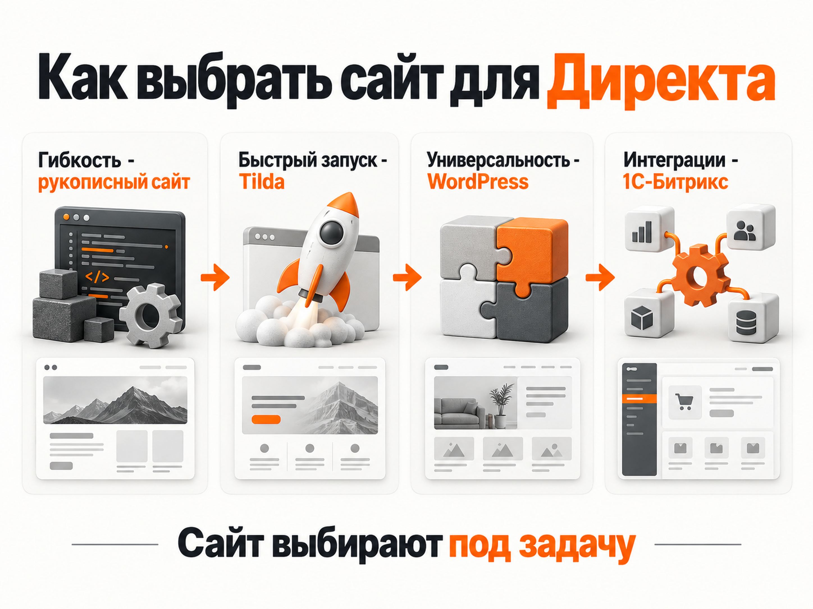

Блог о платном трафике
Что такое лендинг в Яндекс Директе и какой сайт выбрать для рекламы
Лендинг в Яндекс Директе - это страница, на которую пользователь попадает после клика по рекламному объявлению. Обычно она посвящена одному товару, услуге или конкретному предложению и ведет человека к целевому действию: оставить заявку, позвонить, написать в мессенджер или оформить заказ.
Сам Яндекс Директ не требует, чтобы посадочная страница была сделана на какой-то определенной платформе. Можно вести рекламу на собственный сайт, Tilda, WordPress, 1С-Битрикс или рукописный лендинг. Кроме того, сейчас одностраничный сайт можно создать непосредственно внутри Директа.
Что значит «лендинг» в Яндекс Директе
Иногда возникает путаница: лендинг воспринимают как специальный тип рекламной кампании или отдельную технологию Яндекса. На самом деле это прежде всего посадочная страница.
Схема простая:
рекламное объявление → переход на лендинг → целевое действие
Например, человек ищет «установка кондиционера». Он видит объявление в поиске Яндекса, переходит на страницу с описанием услуги, ценами, примерами работ и формой заявки. Эта страница и является лендингом.
Классический лендинг отличается от большого корпоративного сайта тем, что обычно концентрируется на одном предложении. Посетителю не приходится ходить по десяткам разделов и самостоятельно искать нужную информацию.
Для рекламы это удобно: под разные направления бизнеса можно делать отдельные страницы и максимально точно связывать содержание объявления с тем, что человек увидит после перехода.
Каким должен быть лендинг для Яндекс Директа
Универсальной структуры нет. Страница для ремонта квартир и лендинг образовательного курса будут устроены по-разному.
Но хороший рекламный лендинг обычно отвечает на несколько вопросов:
- что именно предлагают;
- для кого подходит предложение;
- почему стоит обратиться именно сюда;
- сколько это стоит или от чего зависит цена;
- какие есть примеры, фотографии, результаты или отзывы;
- как связаться с компанией;
- что нужно сделать прямо сейчас.
Первый экран особенно важен. Если человек кликнул по объявлению «ремонт ванной под ключ», а попал на главную страницу строительной компании со списком из двадцати услуг, часть трафика просто потеряется.
Я обычно смотрю на посадочную страницу еще до запуска рекламы. Иногда проблема будущей высокой стоимости заявки находится не в настройках Директа, а в самом сайте: непонятном предложении, неудобной форме, слабом первом экране или отсутствии нормальной мобильной версии.
На чем можно сделать лендинг для Яндекс Директа
Яндекс Директ не требует какого-то определенного типа сайта или движка. Рекламу можно вести на Tilda, WordPress, 1С-Битрикс, рукописный сайт или другие посадочные страницы. Поэтому выбирать платформу лучше не по принципу «этот движок подходит для рекламы, а этот нет», а по возможностям, стоимости разработки и дальнейшей поддержки.
Рукописный сайт
Рукописный сайт - самый универсальный вариант. Его можно использовать практически для любой задачи: сделать небольшой лендинг для проверки гипотезы, корпоративный сайт, интернет-магазин, каталог или сложную воронку с калькуляторами, квизами, личными кабинетами и интеграциями.
Главное преимущество - практически полная свобода. Нет ограничений конструктора или CMS: можно реализовать нужную структуру, дизайн, анимацию, аналитику, интеграцию с CRM и любую бизнес-логику.
Раньше основным недостатком такой разработки была высокая стоимость и необходимость практически для любой доработки обращаться к программисту. С развитием нейросетей порог входа сильно снизился. Сейчас создать простой сайт с помощью ИИ-инструментов может даже человек без полноценного опыта веб-разработки. Для сложного проекта знания разработчика по-прежнему нужны, но небольшие сайты и лендинги стали намного доступнее.
То есть рукописный сайт нельзя относить только к сложным проектам. При нормальной реализации он подходит практически для всего.
Tilda
Tilda удобна прежде всего скоростью разработки и простотой дальнейшего редактирования. На ней можно делать лендинги, многостраничные сайты, каталоги и небольшие интернет-магазины.
Для большинства рекламных проектов возможностей Tilda достаточно. Через Zero Block можно сделать индивидуальный дизайн, а Метрика, формы, CRM и другие стандартные инструменты подключаются без сложной разработки.
Ограничения начинают проявляться, когда появляется нестандартная серверная логика, сложные интеграции, большой интернет-магазин или функциональность, которую конструктор изначально не предусматривает.
WordPress
WordPress - это не только платформа для блогов, информационных сайтов и SEO. На нем можно сделать обычный лендинг, сайт услуг, корпоративный сайт, каталог и полноценный интернет-магазин.
Например, для интернет-магазинов существует WooCommerce и большое количество других плагинов. Дизайн можно собирать на готовой теме, визуальном редакторе или полностью индивидуальной верстке.
Главное преимущество WordPress - гибкость и огромное количество готовых решений. При этом нужно следить за обновлениями самого WordPress, темы и плагинов, безопасностью и скоростью сайта. Чем больше сторонних расширений используется, тем внимательнее нужно относиться к технической поддержке.
1С-Битрикс
На 1С-Битрикс также можно сделать практически любой сайт: лендинг, корпоративный проект, каталог или крупный интернет-магазин. Есть готовые решения и шаблоны, а можно разработать полностью индивидуальный дизайн.
Но перед выбором Битрикса я бы хорошо подумал, действительно ли он нужен проекту.
Сам движок, разработка и дальнейшая поддержка обычно обходятся заметно дороже более простых решений. Кроме того, бизнес сильнее привязывается к специалистам по Битриксу: даже небольшие изменения на кастомном проекте могут требовать участия разработчика и дополнительных расходов.
Битрикс имеет смысл, когда его возможности действительно нужны бизнесу: например, уже построена соответствующая инфраструктура, используются сложные интеграции с 1С, большой каталог или специфические бизнес-процессы. Выбирать его просто для обычного рекламного лендинга обычно нет необходимости.
Что в итоге
Tilda, WordPress и рукописный сайт можно использовать и для небольшого лендинга, и для более крупного проекта. Интернет-магазин также необязательно делать на какой-то специальной CMS: его можно реализовать на WordPress, Tilda, 1С-Битрикс или разработать самостоятельно.
Сам движок почти ничего не говорит о том, насколько хорошо сайт будет работать с Яндекс Директом. Гораздо важнее предложение, структура страницы, дизайн, скорость загрузки, мобильная версия, аналитика и удобство совершения целевого действия.
Лендинг прямо внутри Яндекс Директа
Сейчас собственный сайт для запуска рекламы вообще не обязателен. В Яндекс Директе появился встроенный инструмент для создания бесплатных одностраничных сайтов.
Лендинг можно создать по описанию бизнеса или на основе уже существующего сайта. Яндекс помогает сформировать структуру, тексты и изображения. На страницу можно добавить формы, контакты, карту и другие стандартные блоки. Сбор заявок и инструменты Яндекс Метрики уже подключены.
Создать страницу можно через раздел «Лендинги», во время настройки Мастера кампаний или через сценарий запуска рекламы без сайта. По состоянию на 2026 год Яндекс указывает, что этот инструмент доступен пользователям из России.
Получается очень быстрый вариант: не нужен программист, хостинг и отдельная разработка.
Но я бы не воспринимал такой лендинг как полноценную замену хорошему собственному сайту во всех ситуациях.
Для теста новой услуги, срочного запуска рекламы или резервной страницы инструмент вполне полезен. Если же через Директ постоянно проходит серьезный объем трафика, обычно лучше иметь собственную посадочную страницу, где вы полностью управляете структурой, дизайном, аналитикой, интеграциями и дальнейшим развитием сайта.
В старых материалах о Директе также часто встречается термин «Турбо-сайт». Яндекс развивал отдельный конструктор Турбо-сайтов еще с 2020 года. В актуальных материалах 2026 года основной сценарий быстрого запуска без собственного сайта Яндекс описывает уже через раздел «Лендинги» в Директе.
Сайты в Яндекс Бизнесе
У Яндекса есть еще один конструктор - внутри Яндекс Бизнеса. Он позволяет автоматически собрать бесплатный сайт на основе данных профиля компании.
Можно разместить информацию о компании, товары и услуги, отзывы, фотографии, контакты, кнопки действий и даже корзину. Такой сайт размещается на домене формата название.clients.site.
Это тоже простой способ получить рабочую страницу без разработки. Особенно логично он выглядит для небольшого локального бизнеса, который уже активно использует карточку компании и Яндекс Карты.
Но возможности дизайна и построения сложных рекламных воронок здесь ограничены. Для небольшой компании этого может быть достаточно, для более серьезного проекта я бы рассматривал такой сайт скорее как базовое решение.
Яндекс KIT - отдельный вариант для интернет-магазинов
В 2025 году Яндекс запустил еще одну платформу - Яндекс KIT. Это уже не обычный конструктор лендингов, а no-code платформа для запуска собственного интернет-магазина. В ней есть готовая инфраструктура для товаров, заказов, оплаты, доставки и интеграций.
Поэтому сравнивать KIT напрямую с Tilda или встроенным лендингом Директа не совсем правильно.
Если нужно рекламировать одну услугу и собирать заявки, KIT для этого избыточен. Если бизнес продает большой ассортимент товаров и нужен полноценный интернет-магазин, это уже более подходящий сценарий.
Как выбрать сайт для Яндекс Директа
На мой взгляд, искать «лучший движок для Яндекс Директа» не совсем правильно. Практически любой нормально сделанный сайт можно использовать как посадочную страницу.

Если сайт уже есть и он нормально выглядит, быстро работает, соответствует рекламному предложению и позволяет отслеживать заявки, менять его только ради запуска Директа не нужно.
Если сайт создается с нуля, я бы ориентировался на задачу и ресурсы проекта:
| Вариант | Когда имеет смысл |
|---|---|
| Рукописный сайт | Когда нужен максимальный контроль над дизайном, функциональностью и развитием сайта. Подходит как для простого лендинга, так и для магазина или сложной воронки |
| Tilda | Когда нужно относительно быстро собрать качественный сайт и затем самостоятельно его редактировать |
| WordPress | Когда нужен универсальный сайт, который можно постепенно развивать: добавлять услуги, статьи, SEO-страницы, каталог или интернет-магазин |
| 1С-Битрикс | Когда бизнесу действительно нужна инфраструктура Битрикса, сложные интеграции или проект уже работает на этой системе |
| Лендинг в Яндекс Директе | Когда собственного сайта нет и нужно получить простую посадочную страницу практически без разработки |
| Сайт Яндекс Бизнеса | Когда уже есть профиль компании и достаточно базового сайта на основе информации из карточки |
Отдельно я бы разделял полноценные сайты и упрощенные конструкторы самого Яндекса.
Лендинг внутри Директа или сайт Яндекс Бизнеса позволяют быстро получить рабочую страницу без отдельной разработки. Это полезная возможность, если сайта вообще нет или нужна временная посадочная страница.
Но как основную посадочную для постоянной рекламы я бы по возможности выбирал полноценный собственный сайт. У встроенных решений Яндекса значительно меньше свободы в дизайне, структуре, подаче предложения и развитии воронки. На фоне современных сайтов такие страницы часто выглядят слишком шаблонно, а возможности улучшать их конверсию ограничены.
Поэтому при наличии ресурсов я бы выбирал между Tilda, WordPress и собственной разработкой. Все три варианта позволяют сделать современную посадочную страницу практически под любую рекламную задачу.
Для интернет-магазина принцип тот же. Магазин можно сделать на WordPress, Tilda, 1С-Битрикс или разработать самостоятельно. Яндекс KIT тоже существует как отдельное решение для электронной коммерции, но это сравнительно новый инструмент, поэтому я бы не выделял его как универсальный выбор только потому, что магазин планируется рекламировать в Директе.
Главное для рекламы - не название CMS. Важна вся связка: рекламный запрос → объявление → предложение на сайте → целевое действие → аналитика. Именно качество этой связки в первую очередь влияет на то, превращаются ли клики в заявки и продажи.
Нужно ли устанавливать Яндекс Метрику на лендинг
Для собственного сайта - да. Без аналитики вы будете видеть клики и расходы в Директе, но не получите нормальной картины поведения пользователей после перехода.
В Метрике можно фиксировать отправку формы, звонки, переходы в мессенджеры, покупки и другие полезные действия, а затем использовать эти цели при анализе и оптимизации рекламных кампаний.
Во встроенных лендингах Директа инструменты Метрики уже интегрированы, поэтому базовая статистика по заявкам и источникам доступна сразу после запуска.
Главное
Лендинг в Яндекс Директе - это посадочная страница, на которую приходит человек после рекламного объявления. Она может быть сделана практически на любой платформе: Tilda, WordPress, 1С-Битрикс, собственном движке или в одном из инструментов Яндекса.
Если нужно запустить рекламу максимально быстро, сейчас страницу можно создать прямо внутри Директа. Для теста или резервного варианта это вполне рабочее решение. Для постоянной рекламы и более сложной воронки я предпочитаю отдельный сайт, где можно полностью контролировать структуру, аналитику и дальнейшие доработки.